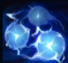
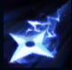
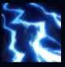
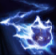
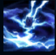

Kennen
| Kennen The Heart Of The Tempest | |
|---|---|
| Release date | 08.04.2010 |
| Class | Specialist |
| Positions | Top |
| Resource | Energy |
| Range type | Ranged |
| Adaptive type | Magic |
| Base statistics | |||
| Health | 541 – 1969 | Energy | 200 |
| Health regen. | 5.5 – 16.55 |
Energy regen. | 50 |
| Armor | 29 – 92.75 | Attack damage | 48 – 111.75 |
| Magic resist. | 30 – 38.5 | Crit. damage | 175% |
| Move. speed | 335 | Attack range | 550 |
Kennen nu este doar un luptător rapid ca fulgerul, care apără armonia Ioniei, ci este și singurul yordle din ordinul Kinkou. În ciuda înfățișării sale, de-abia așteaptă să se repeadă asupra oricărei amenințări într-o furtună sălbatică de entuziasm și stele ninja. Alături de maestrul său, Shen, Kennen patrulează lumea spiritelor, doborându-și dușmanii cu descărcări devastatoare de energie electrică. |  |
ÎNSEMNUL FURTUNII Kennen amețește inamicii pe care îi lovește de 3 ori cu abilitățile sale. |
||
|---|---|---|---|---|
 |
SHURIKEN Kennen aruncă o stea ninja rapidă către o locație, provocând daune și aplicând un ''Însemn al furtunii'' oricărui adversar lovit. |
|||
 |
SUPRATENSIUNE ELECTRICĂ Kennen provoacă în mod pasiv daune suplimentare și aplică un ''Însemn al furtunii'' țintei sale la fiecare câteva atacuri; poate activa această abilitate pentru a provoca daune și a aplica încă un ''Însemn al furtunii'' țintelor deja marcate. |
|||
|  |
GOANĂ FULGERĂTOARE Kennen se transformă în fulger, putând să treacă prin unități, cărora le aplică un ''Însemn al furtunii''. Kennen primește viteză de mișcare bonus când intră în această stare și apoi viteză de atac bonus după încheierea efectului. |
|||
 |
VORTEX TĂIOS Kennen invocă o furtună care lovește campionii inamici din apropiere și le provoacă daune magice. |